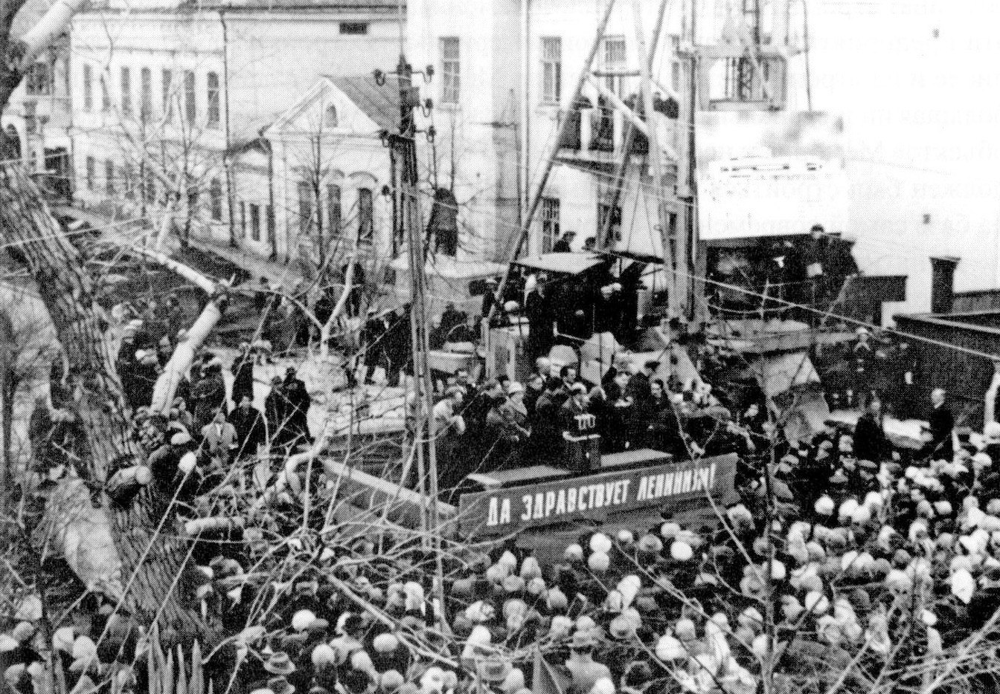

В списке памятных дат Ульяновска этого месяца – две даты, разделенные несколькими днями. 22 апреля 1967 года состоялась закладка Ленинского мемориала (50 лет!). 16 апреля 1970 года – его торжественное открытие. Шесть дней в календаре – и три года напряженного труда, ударной стройки, в которой принимали участие не только профессиональные архитекторы, строители, художники, но и многие жители города, а по большому счету – вся страна. Конечно, урона, причиненного при этом исторической части Ульяновска, можно было если не избежать, то хотя бы минимизировать его. Но у каждого времени свои приоритеты. Тех, кто принимал тогда решения, подобные вопросы интересовали менее всего. Все же, как ни относись к ушедшей эпохе и человеку, чье имя воплощает монументальное сооружение – с тем, что Мемориал стал одним из главных градообразующих символов Ульяновска, спорить трудно. Посмотрим, как он строился. Кто-то вспомнит о давних днях, а тем, кто не застал их, наверное, интересно будет это видеть. В ближайшие дни, в период между двумя датами, попробую поэтапно представить фотохронику большого строительства. В одну подборку, даже при самом придирчивом отборе, никак не получается уложиться. Впрочем, чтобы не утомлять одной темой, буду чередовать ее с другими сюжетами. Сегодня – начало стройки, 1967 год. 22 апреля 1967 г., на улице Ульянова, бывшей Стрелецкой, собрались тысячи людей на торжественный митинг, посвященный закладке Мемориала. Было принято Обращение к потомкам, заложенное в капсуле в фундамент будущего здания. А потом начались трудовые будни: работа строителей днем и ночью, субботники горожан, сотни людей, прибывших на стройку со всего Союза и из других стран… «ВЕЛИЧЕСТВЕННЫЙ ПАМЯТНИК В.И.ЛЕНИНУ». Этого волнующего события ждали, к нему готовились. В памяти тысяч ульяновцев возникал макет сооружения, который они в прошлом году видели в областном краеведческом музее. … И, конечно, всем хотелось присутствовать при закладке этого памятника Ильичу. … И вот настал этот торжественный день 22 апреля. На улицу Ульянова… со всех сторон стекались колонны. Она, узенькая пока, бывшая улица Стрелецкая, до отказа заполнена людьми. Но какой простор распахнется здесь через 2-3 года, когда будет создан Мемориальный центр и вокруг него огромная площадь. Думая об этом, тысячи людей с восхищением смотрят на укрепленный здесь большой рисунок будущего сооружения… Бурную овацию вызвало у участников митинга предложение принять Обращение к потомкам. Как это здорово, что мы сейчас… разговариваем с людьми коммунистического завтра, которое сами строим сегодня; с теми, кто будет отмечать 200-ую годовщину вождя. … И вот настал самый торжественный момент. Контейнер на красной бархатной подушечке поплыл из рук в руки… к котловану рядом с первой сваей будущего здания. … Академик Поспелов передает контейнер 1-му секретарю обкома КПСС А.А.Скочилову. Анатолий Андрианович спускается вниз котлована и устанавливает контейнер на дно небольшой ниши… «Ульяновская правда», 25 апреля 1967 г. Из Обращения к потомкам, заложенного в фундамент здания ленинского Мемориала: «НАШИМ НАСЛЕДНИКАМ. Обращение, принятое на митинге трудящихся Ульяновска. Сегодня, 22 апреля 1967 года, на месте, где 97 лет тому назад родился Владимир Ильич Ульянов-Ленин…, закладывается монументальное сооружение, входящее в комплекс Мемориального центра, создаваемого к 100-летию со дня рождения В.И.Ленина. …Взволнованные этим большим событием, мы, трудящиеся города Ульяновска, собрались на торжественный митинг, и в этот знаменательный день обращаемся к вам, нашим потомкам, нашим правнукам – тем, кто будет отмечать 150-летний юбилей Великой Октябрьской социалистической революции и 200-ую годовщину со дня рождения Владимира Ильича. … Со всех концов Советского Союза и из многих зарубежных стран приезжают в Ульяновск тысячи людей, чтобы поклониться священным ленинским местам. С каждым годом этот живой человеческий поток растет и растет. Только в 1966 году в Доме-музее В.И.Ленина побывало около полумиллиона экскурсантов и туристов. Дорогие наши потомки! …Наши деды и отцы дали клятву свято хранить в городе все то, что связано с памятью В.И.Ленина и семьей Ульяновых. Этот наказ выполняется. … Трудящиеся города заверяют…, что ленинские места Ульяновска будут сохранены на века, для вас, наших потомков. … Своим трудом и борьбой советский народ прокладывает пути в будущее, навстречу вам, нашим наследникам. Дорогие наши наследники! По праву старшинства мы даем вам, нашим правнукам, отеческий наказ – высоко держать знамя великого Ленина, приумножать завоевания своих дедов и отцов, идти дальше вперед славным ленинским путем. Свято беречь ленинские места нашего города, сохранять их для будущих поколений. Пусть неугасимый ленинский светоч из века в век служит людям! Будьте счастливы, как были счастливы и мы, работая во имя вашего блага и процветания!». «…В воздухе стали носиться слухи, что Дом Свободы хотят снести, так как он закрывает вид на Мемориал. А при краеведческом музее работала секция «Ветеранов революции и гражданской войны»; возглавлял ее участник гражданской войны и освобождения Симбирска Андрей Федорович Куликов. Все ветераны очень болели за этот дом. Конечно, они переживали за него не как за дом губернатора, а как за «Дом Свободы»: с ним связана была их молодость, борьба, высокие идеалы, за которые они боролись… И чувства этих людей были абсолютно искренни. Говорят, даже велись переговоры в Москве, чтобы дом повернуть, чтобы он не закрывал вид на Мемориал, и поставить его параллельно зданию пединститута. Но переговоры не увенчались успехом. А.Ф.Куликов попросил собрать всех ветеранов, чтобы выставить пикет и спасти дом. Но ему сказали, что времена пикетов прошли, идите в обком и решайте вопрос там. Большая группа коммунистов пришла к А.А.Скочилову, 1-му секретарю обкома, но никакие аргументы не убедили оставить дом. И вот в одну из летних ночей дома не стало. Вечером, уходя с работы, люди видели его…, а утром следующего дня его уже не было. Осталась ровная площадка, даже без строительного мусора. Не стало симбирского дворца…». И.Кузнецова, сотрудник областного архива. «Симбирский курьер», 3 декабря 1996 г. Примечание: В последнем отрывке забежал вперед. Дом Свободы снесли в 1969 году. Но начали ломать улицу Ульянова (Стрелецкую) с 1967-го. Фотографии см. в альбоме «Дом губернатора – Дом Свободы». Продолжение далее. Митинг, посвященный началу строительства здания Мемориального центра. 22 апреля 1967 г., улица Ульянова. Из книги: Л.Ф.Хлопина «Мемориал над Волгой», Ульяновск, 2010. 